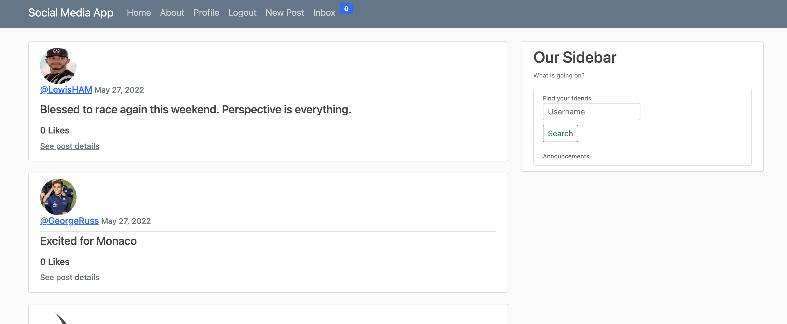
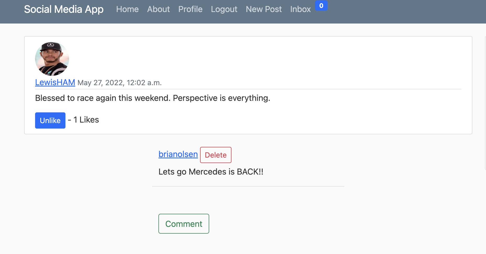
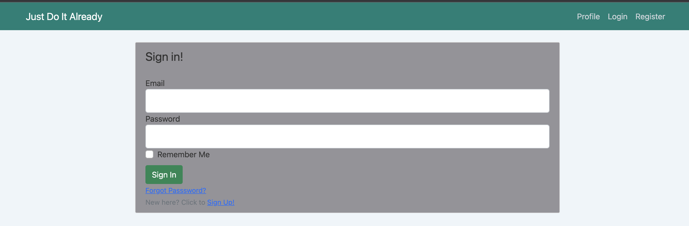
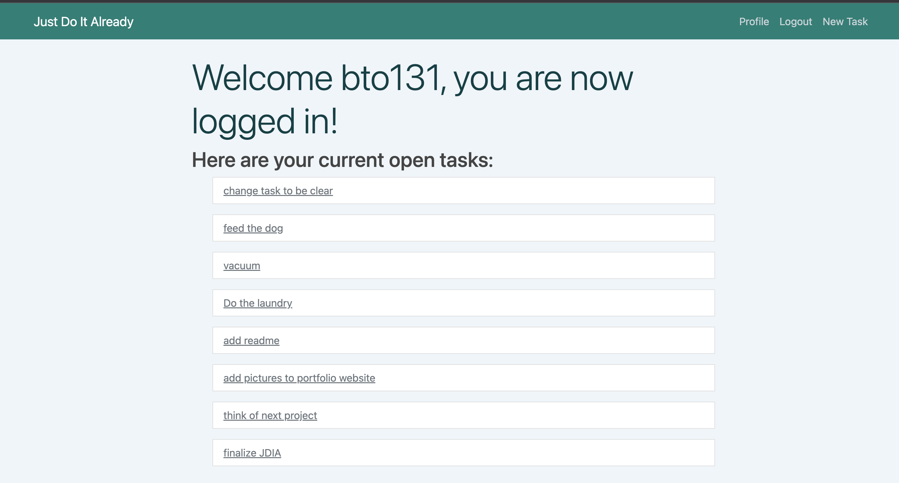
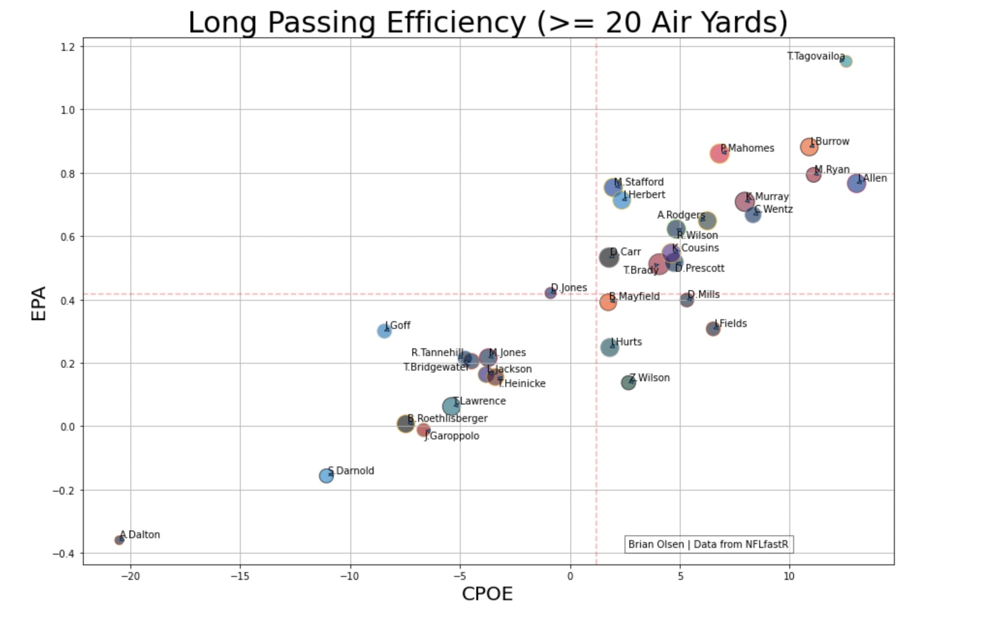

Please see my GitHub for code examples. This page will provide a brief overview of a few projects.
Social Media Web App The app includes social feed, post, likes, comments, messaging, user search, authenication,
and profile page features. This project is built primarily using Django, a popular Python framework.
The website design was created using Bootstrap classes. Currently, the website uses a local SQLite database to store
the User, Post, Message, and Comment data. I am planning to upgrade the database to MySQL or PostgreSQL if this project is made active online.


To Do List Web App This full stack project uses Python and MySQL to build a web app to enter and track tasks to do. The app was built using the Flask python framework.
I used the SQLAlchemy, Bcrypt, and LoginManager libraries to build out the database connection and user authenication features. Front end design was created using CSS Bootstrap classes.


Playlist Creation AppThis project uses ReactJS to build a web app called "Jammming". Jammming uses the Spotify API to search for songs and add them
to a playlist, once a playlist is completed the playlist can be pushed to the users spotify account.
Plotting NFL passing efficiency by depth of targetIn this example, I use the NFLfastpy library to load professional football to load Expected Pointed Added and
Completion Percentage Over Expected to analyze Quarterback efficiency by passing distance. I have group passes into 3 groups: short, intermediate,
and long passes. The code at the end of this sheet is designed to request an input of which distance group you would like plotted and will plot one of the 3 groups or total efficiency.
